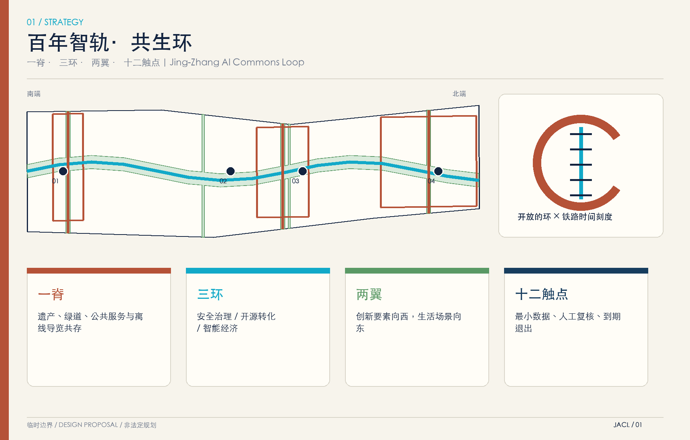
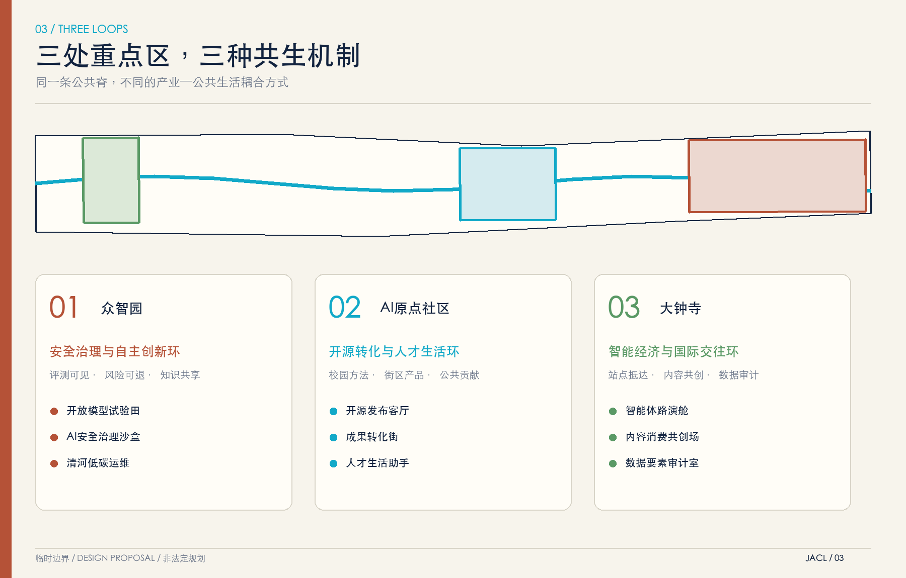
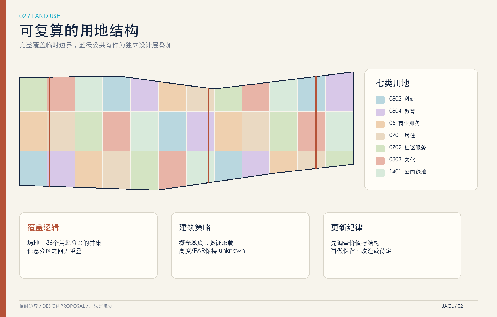
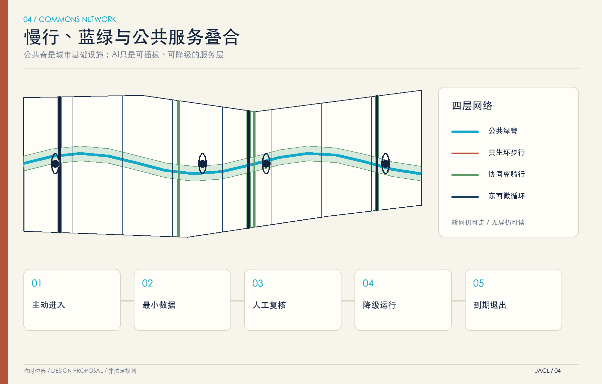
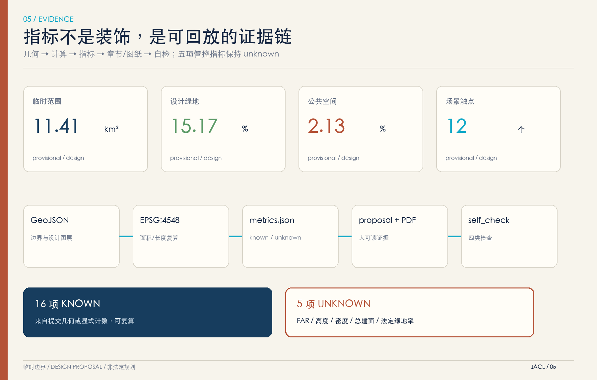

总览地图

三层范围
43.6 km² 统筹研究
产业链、人才链、公共验证与国际传播。
11.4 km² 总体设计
一脊三环两翼的结构化图层与指标。
368.4 ha 重点区域
三处差异化共生环；当前边界均为 provisional。
重点区域

用地分区

交通慢行
蓝绿公共空间

建筑
概念建筑基底只验证空间承载和公共空间关系；不是现状测绘，也不支持拆除、补偿或审批判断。FAR、高度、密度和总建筑面积保持 unknown。
更新项目
公共脊连续慢行补链
时序门廊可逆试装
开源发布客厅运营试点
三处场景治理说明牌
众智园安全治理环
原点成果转化街
大钟寺四象限缝合
两翼骑行与服务节点
端侧算力共享设备位
四地标长期内容机制
城市场景开放目录
年度共生环评估
AI 场景
开放模型试验田
产业测试场景；最小数据、人工复核、退出机制。
AI安全治理沙盒
产业测试场景；最小数据、人工复核、退出机制。
清河低碳运维
公共/产业服务场景；最小数据、人工复核、退出机制。
无障碍慢行副驾
公共/产业服务场景；最小数据、人工复核、退出机制。
开源发布客厅
公共/产业服务场景；最小数据、人工复核、退出机制。
近校成果转化街
公共/产业服务场景；最小数据、人工复核、退出机制。
人才生活助手
公共/产业服务场景；最小数据、人工复核、退出机制。
公共服务翻译站
公共/产业服务场景；最小数据、人工复核、退出机制。
智能体路演舱
公共/产业服务场景；最小数据、人工复核、退出机制。
内容消费共创场
公共/产业服务场景；最小数据、人工复核、退出机制。
数据要素审计室
产业测试场景；最小数据、人工复核、退出机制。
遗产叙事导览
公共/产业服务场景；最小数据、人工复核、退出机制。
核心指标

任务覆盖
| 任务 | 主要证据 |
|---|---|
| 公告 1.3–1.5 | proposal、9 个 GeoJSON、指标与 A3/A0 |
| agent.1–agent.6 | 品牌、6 案例、12 场景、6 画像、4 地标、运营闭环 |
| 专业深度 | standard_matrix + design_depth_matrix + compliance_matrix |
自检状态
本页面展示提交内容；最终状态以 self_check.json 为准。四类门禁：确定性包校验、空间拓扑、静态可视化、专业证据链。
来源
公告、仓库 taskbook/site-package/source registry；六个全球案例仅使用官方页面作 background-only 机制参考。完整 URL 见 sources.json。
假设
总体范围和三处重点区不是 official redline。设计面积、比例、道路与建筑基底只用于本次方案讨论；官方 geometry 发布后必须全包复算。